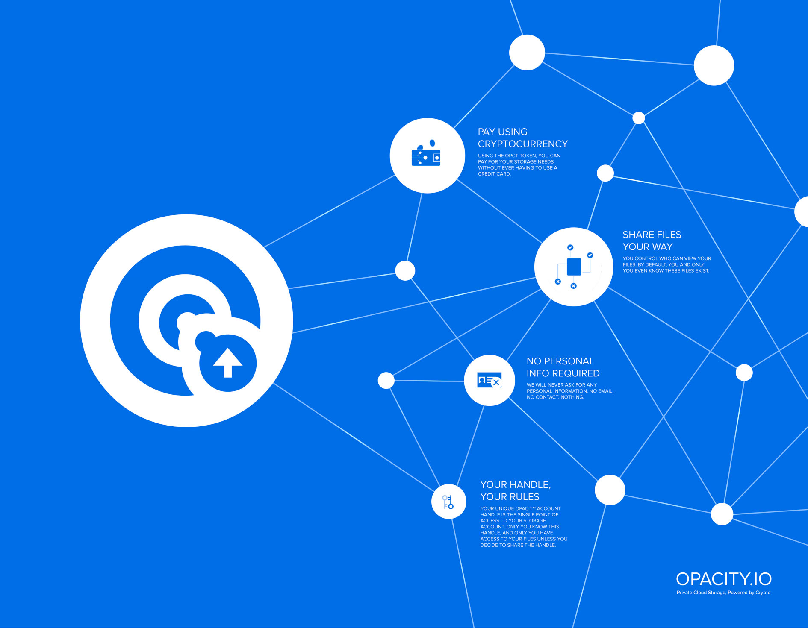
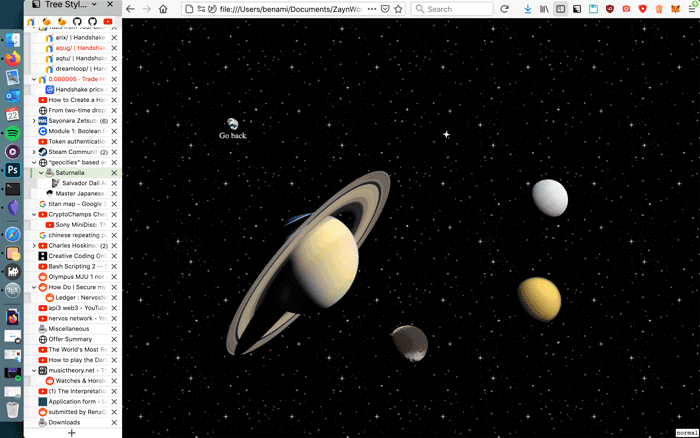

Visualisation of my notes by their connections to eachother, created using Obsidian.md and Photoshop.
My links page for this website, that can be accessed by the links button on the navbar of this page. Created using Vim and Photoshop.
Sci-fi plane from a couple years back, created using Blender.
Design of my mothers website: counselling-with-iffat.com.
Ryoji Ikeda Inspired data representaion of a wiremesh shape, created using Photoshop.

My submission for an infographic contest of an emerging blockchain-based cloud storage system, created using Photoshop.

A work in progress page for this website, that can be accessed here: Saturnalia, created using Vim and Photoshop.
A quick water company branding project from a school module a few years back.
A friend I photographed.